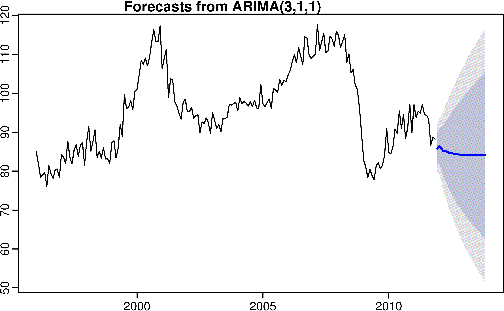
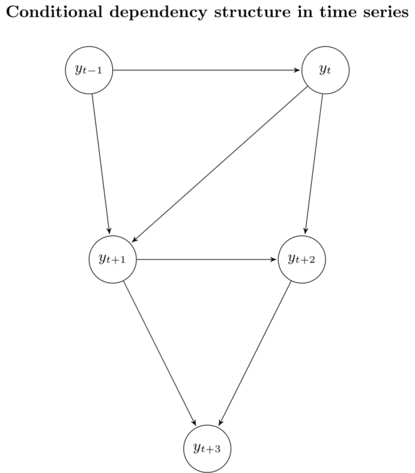
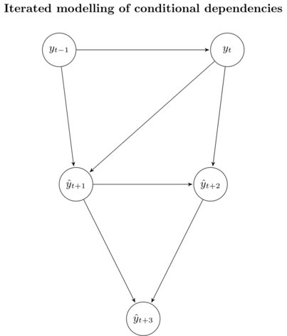
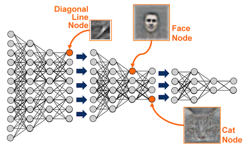
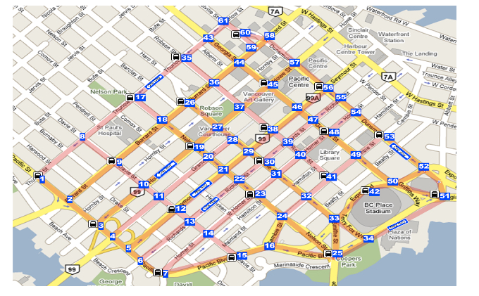
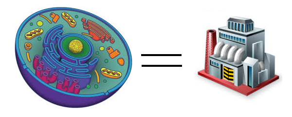
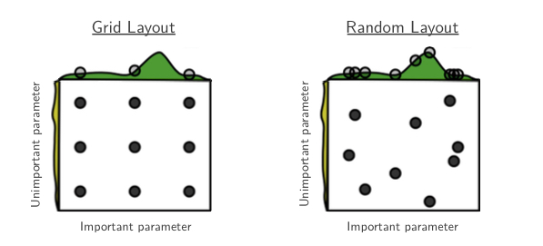

Learn Something New
Supervised Learning -- Revisited
A supervised model has following parts:
- Data: \(X\) and \(Y\)
- Parameters: some variables you are trying to learn/fit/optimize.
- Hyper-parameters: some pre-set macros which controls model complexity and/or model behavior. For example
- Polynomial regression: order \(n\)
- Multi-dimensional linear regression: kernels, regularization parameter \(\lambda\), regularization type L1/L2
- Random Forest:
n_estimators,max_depth, etc. - Neural Network: learning rate, activation functions, drop-out ratio, etc.
- Algorithm: i.e., which model? A hyper-parameter. Examples:
- Additive or multiplicative
- Decision tree
- Support vector machine
- Ensembles
- ...
- Loss function: Also a hyper-parameter. Common loss function:
- Mean square error: regression
- Mean absolute error: regression
- Cross entropy: classification
- negative log-Likelihood function: probabilistic models
- Gram matrix: style transfer
- Regularization (can be add to any loss)
- AIC/BIC: \(||\beta||_0\) for simpliness
- L1: \(||\beta||_1\) for sparse-ness
- L2: \(||\beta||_2\) for small, non-zero coefficient
- Early stopping: regularization in time
- Share parameter: e.g., recurrent/convolutional network
- ...
- Optimizer: Again, a hyper-parameter. How to find the best numerical solutions? For example:
- Random guess
- Closed-form solution
- Gradient-based optimization
- Genetic algorithm
Long-term Forecasting in Machine Learning World
Question: Given a time-series \(y_t\), What if we have want to forecast \(H\) steps further in the future?
Seasonal ARIMA?
- well-suited for short-term forecasts, not for longer term forecasts
- convergence of the autoregressive part

Let's use ML
Still assume assume \(y_t\) follows some additive autoregressive models:
\[y_{t+1} = f(y_t, ..., y_{t-n+1}) + \epsilon_t\]
- Note I didn't assume stationarity here. (Why?)
- \(f(\cdot)\) can be any machine learning model with
- \(X = [\vec y_t, ..., \vec y_{t-n+1}]\)
- \(Y = \vec y_{t+1}\)
- To be more specific: \[X = \begin{bmatrix} y_t & y_{t-1} & \dots & y_{t-n+1} \\ y_{t-1} & y_{t-2} & \dots & y_{t-n} \\ \vdots & \vdots & \ddots & \vdots \\ y_n & y_{n-1} & \dots & y_1 \end{bmatrix}, Y = \begin{bmatrix} y_{t+1} \\ y_{t} \\ \vdots \\ y_{n+1} \end{bmatrix} \\ \]
- Using Sklearn syntax:
f = model.fit(X, Y)
- When \(H=1\), any ML models can take care of.
- When \(H>1\), things become more interesting. Three possible solutions presented here.
- Assume \(n=2\) from now on.
Solution 1: Iterated forecasting
We forecast \(y\)'s one at a time.
\[
\hat y_{t+1} = f(y_t, y_{t-1}) \\
\hat y_{t+2} = f(y_{t+1}, y_{t}) \\
\vdots \\
\hat y_{t+H} = f(y_{t+H-1}, y_{t+H-2})
\]

However, we are standing at time \(t\). We don't know anything at \(t+1\)!
We need to replace the future by our estimates!
\[
\hat y_{t+1} = f(y_t, y_{t-1}) \\
\hat y_{t+2} = f(\hat y_{t+1}, y_{t}) \\
\vdots \\
\hat y_{t+H} = f(\hat y_{t+H-1}, \hat y_{t+H-2})
\]

- An unbiased estimator of \(\mathbb{E}[y_{t+1:(t+H)}|y_t]\), since it preserves the stochastic dependencies of the underlying data.
- Bias-variance trade-off: suffers from high variance due to the accumulation of error in the individual forecasts.
- Low performance over longer time horizons H.
- When we have additional inputs, \(x_t\), we need to forecast \(\hat x_{t+h}\) as well!
Solution 2: \(H\)-step ahead forecasting
Learn \(H\) different models:
\[
\hat y_{t+1} = f_1(y_t, y_{t-1}) \\
\hat y_{t+2} = f_1(y_t, y_{t-1}) \\
\vdots \\
\hat y_{t+H} = f_H(y_t, y_{t-1})
\]
 

- Does NOT suffer from the accumulation of error.
- Models are trained independently, no statistical dependencies between the predicted values \(y_{t+h}\) are guaranteed.
Solution 3: Multiple input multiple output (MIMO) models
One model fits all.
\[[\hat y_{t+H}, \dots ,\hat y_{t+1}] = f(y_t, y_{t-1})\]
- No conditional independence assumptions are made.
- No accumulation of error of individual forecasts.
- All horizons \(H\) are forecasted with the same model, which limits flexibility.
Summary
- No free lunch.
- Going to traditional ML means no uncertainty estimates.
- Work-around: bootstrap or Bayesian regression (computationally $$)
How to decide \(n\)?
- Small \(n\): simpler model, restricted explainability. Unlikely to capture the full seasonality.
- Big \(n\): complex model, easy to overfit, don't know where to stop.
- \(n\) usually is a hyper-parameter to tune.
- Or, use a recurrent model (i.e., \(n=\infty\))
 

Hyperparameter Tuning
The most time-costly thing you will ever encounter in ML!
Model training
When you hear
Let's train a model ... -- Your future boss
it means:
- Choose a set of hyper-parameter:
- Regularizer \(\lambda\)
- Model \(f(\cdot)\)
- Loss \(L(y, \hat y)\)
- Optimizer
- Prepare dataset, \(X\) and \(Y\)
- A supervised model, with parameters \(\theta\), can be thus defined as \[\hat Y = f_{\lambda}(X, \theta)\]
- Use optimizer to solve \[\theta^* = \text{argmin}_{\theta} L(Y, \hat Y)\]
Model evaluations
Hyper-parameter space is (almost) infinite and non-convex. There will always be a better model:
- Impossible to achieve global maximum
- Gradient-base method cannot be used at hyper-parameter level (not always true -- Learning to learn by gradient descent by gradient descent)
Given we have some models (with their own hyper-parameters), how do we compare them?
- Define an evaluation metric
- Sharpe Ratio
- PnL
- Accuracies
- Click-through rate (recommendation system)
- ETA (dispatch system)
- ...
- Train these models on a training set
- Evaluate on a validation set
- Pick the best model(s) with best performance on the validation set
- (Optional) Re-train the model(s) on train + validation set
Question: How do we choose finite models out of the infinite model domain?
Time is money
Some benchmarks of training a model (i.e., a set of hyper-parameter) with < 10G of data:
- Linear regressions: gradient method, parallelizable, <1min
- Random forest: gradient method, parallelizable, ~10min
- Boostings: gradient method, cannot be parallelized, <1h
Above have well-defined functional forms. What if
- \(f(\cdot)\) is explicitly unknown and multimodal.
- Evaluations of \(f(\cdot)\) may be perturbed (non-convex).
- Evaluations of \(f(\cdot)\) are expensive.
Such as
- Neural networks: hours ~ days 
- Dispatch algo: hours 
- A/B Testing: days
 
 - Design of experiments: gene optimization: years? 
What are we aiming for: Get a good-enough model with as fewer try as possible
Option 1: Use previous knowledge
To select the parameters at hand. Perhaps not very scientific but still in use...
Option 2: Grid search
- A brute force way to iterate through all possibilities.
- Sklearn API
- How to grid search?
- discrete variables: simple iterate
- continuous variable
- uniform grid (e.g., hidden dimensions)
- log grid (e.g., learning rate)
- Curse of dimensionality!
Option 3: Random search
- Some hyper-parameters are useless (won't improve model performace)
- Better than grid search in various senses but still expensive to guarantee good coverage.

Question: Can we do better?
Option 4: Bayesian optimization
Given fixed data-set, \(X\) and \(Y\), and pre-specified evaluation metric, \(L[f_\lambda(x, \theta), y]\), hyper-parameter and model performance is a mapping.
Goal: fit a function (i.e., another model), \(g: \lambda \to L(f_\lambda(X_{val}, \theta), Y_{val})\)
- \(g\) is a non-parametric meta-model.
- We can only afford very few "training data" (i.e., hyper-param search) to fit \(g\) -- Bayesian models are better.
- State-of-art: Gaussian Process
- Illustration here
- Simple idea: p8-17
- Simple algo: p34-40
- Why doesn’t everyone use this: p41
Proper Backtesting
A quantitative trading strategy is indeed a hyper-parameter -- Frank Xia
Backtesting: validation/hyper-param tuning through time -- Frank Xia
- How to split data correctly (Draw on white board)
- Retrain on train+val is a must (when is not a must?)
- Robust backtesting
- Rolling backtest: how to avoid beginner's luck?
- Model ensemble: how to reduce variance and seasonality? -- what do ensemble?
It's a miracle when loss function and evaluation metric match. -- Frank Xia
- To pick a proper loss function -- an art or a science?